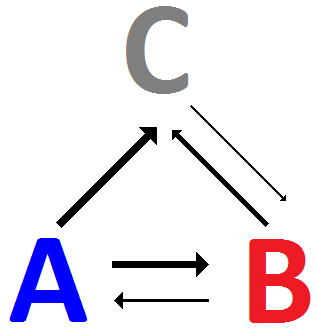
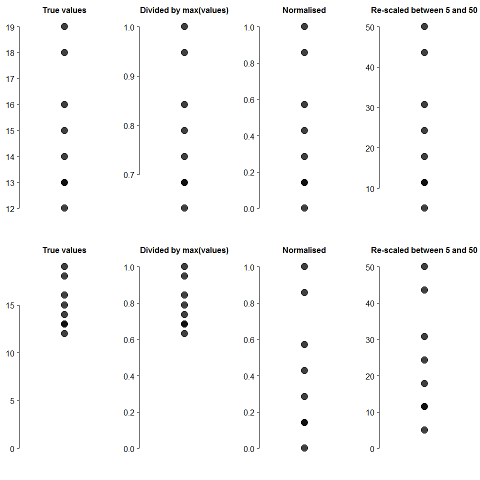

Thinking about normalisation 06-12-17
The term normalisation is used to refer to a number of different things: changing a distribution to make it resemble a normal
distribution, removing redundancy from linked databases (learnt that today!), changing the scale of a distribution, or ...
I'll be referring to rescaling a distribution in this post.
Rescaling values is useful. For example, I want to scale the size of the arrows in the figure below according to how often a
pathogen is being transmitted between populations A, B, and C. I know the number of times each transmission
has occurred, how can I size the arrows in the diagram below according to these counts?
The size of the arrows is controlled by a value between 0 and 1, but my counts go from 0 to 3. In this situation I divide each count by the maximum of the counts (3) and then all the values will range between 0 and 1.

I was working on the above problem today, and it got me thinking about normalisation. Am I doing it right? What information is
lost? When can I use normalisation?
In my work, I use the following ways to normalise my data:
I messed around with these in R and created the following plots:

The idea behind these plots is to highlight that understanding how you normalised your data, particularly the scale you used, is
very important for any interpretation later on!
To finish up: Once a vector of numbers (v = [a, b, c]) is normalised, only the relative differences between the values
remain. What you lose is the context. You can't quantify how different a is from b, only how that difference
compares to the differences between a and c, and b and c.
Also, normalising a vector of only two numbers is pointless and all the information is lost!
All the above was probably pretty obvious, but I guess it can't hurt to think these things through...